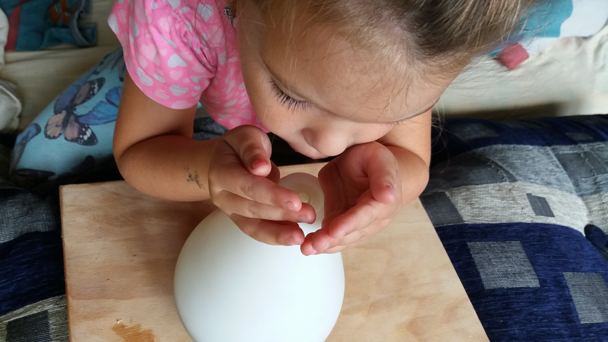

Az illóolajról a kellemes illat, az illatmécses és talán legtöbbeknek az orron át történő belélegzés jut eszébe!
Az inhalálás közvetlenül befolyásolja a test és az elme működését is, annak köszönhetően, hogy képes az agy limbikus rendszerének stimulálására, mely az agykéreg alatti szervek csoportja, amibe beletartozik a hipotalamusz, a hippokampusz és az amigdala is. Ennek a területnek erős befolyása van az érzelmi egyensúlytól és energiaszinttől kezdve, étvágyunk kontrollálásán keresztül, a szív- és immunfunkciók működéséig mindenre.
Néhány kutatás szerint az inhalálás a test immunrendszerét is képes fejleszteni. Az érzelmi negatívitást, melyet különféle megbetegedések és traumák válthatnak ki, az olajok képesek eloszlatni. Javítják testünk ellenállóképességét, egészséges környezetet teremtve ezzel.
A jó minőségű illóolajban lévő nagy molekulák a hő hatására szétesnek, ezért csökken a olaj hatóanyag tartalma. Így a Young Living olajak esetében mi a porlasztást vagy a közvetlen belégzést preferáljuk!
A Young Living diffúzorai hideg, vagy szobahőmérsékletű levegő segítségével atomjaira porlasztja a felhasznált terápiás illóolajat. Az így felszabadul molekulák hosszú órákon át a levegőben fejtik ki jótékony, terápiás hatásukat. Nem roncsolja az olaj szerkezetét, megtartva ezzel a minőséget.
A Young Living Diffúzorairól itt olvashatsz bővebben:(hamarosan)
A diffúzorhoz bármely YL olajat használhatod attól függően, hogy mi az elérni kívánt eredmény. Néhány kiemelkedő olajat még is megemlítenék, amit én előszeretettel használok az otthonunkban az immunrendszerünk támogatása érdekében és a jó érzés miatt is:
♥♥♥♥♥♥♥♥♥♥♥♥♥♥♥♥♥♥♥♥♥♥♥♥♥♥♥♥♥♥
Belégzés történhet közvetlenül a palackból is.
Mikor az ember a kezébe vesz egy illatos üveget, biztos, hogy egyből megszagolja :). Ez az egyik legegyszerűbb módja a terápiás hatás szervezetünkbe történő bejuttatásnak. Csak megszimatoljuk és már tettünk is valamit az egészségünk érdekében.
Tenyérbe cseppentve 1 csepp olajat:
az egyik tenyerünkbe tegyünk egy cseppet valamelyik kedvenc olajunkból, dörzsöljük össze és helyezzük az orrunk és szánk elé figyelve arra, hogy a szembe ne kerüljön. Szippantsunk bele aztán jó mélyen a tenyerünkbe, és élvezzük az intenzív illathatást. Nehéz lenne megmondani, hogy melyik kedvenc olajammal teszem ezt. A legpopulárisabb az én tapasztalataim szerint, főleg, ha valaki ismerkedik csak az illattal, az a borsmenta. Egy csepp és az elme kitisztul, a szellemünk és a testünk felüdül. Sokat segít pld. utazási rosszullétek estén is!
Copyright © All rights reserved | This template is made with by Colorlib